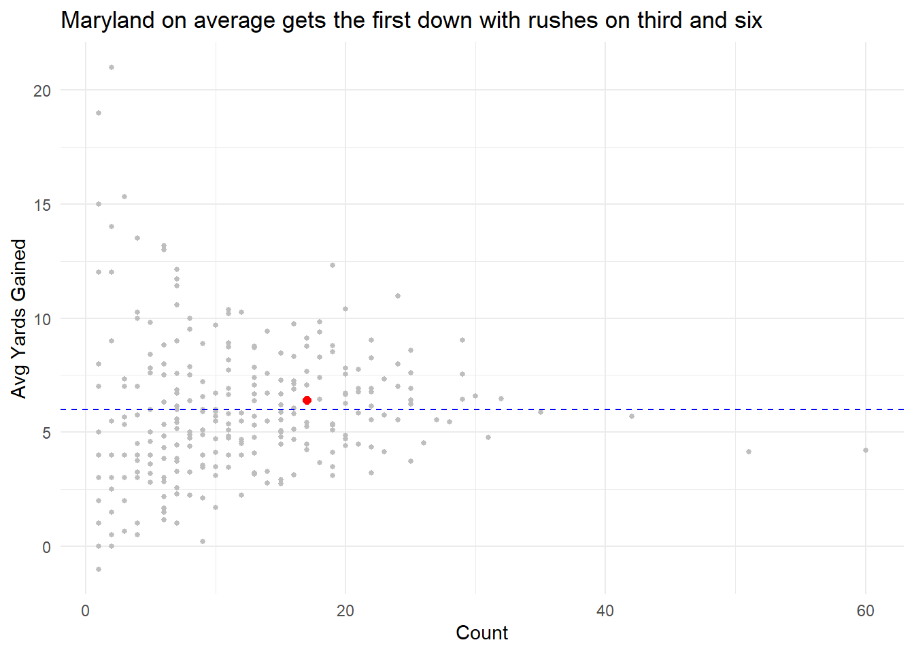

Did Maryland make a crucial mistake against Illinois?
lowercaseword
lowercaseword
lowercaseword
Author
Jonathan Iacovacci
Published
October 15, 2024
During last year’s homecoming game, Maryland ran the ball on 3rd and 6 on the Illinois 29 yard line, losing yardage, and setting up a field goal to tie the game. Maryland would go on to lose 27-24 on a walkoff field goal. Many blamed the play call for the loss, what was this really that bad of a decision? Let’s walk through the history of rushing on third and six in the past five years. First we need to load in the libraries.
Code
library(cfbfastR)library(tidyverse)
── Attaching core tidyverse packages ──────────────────────── tidyverse 2.0.0 ──
✔ dplyr 1.1.4 ✔ readr 2.1.5
✔ forcats 1.0.0 ✔ stringr 1.5.1
✔ ggplot2 3.5.1 ✔ tibble 3.2.1
✔ lubridate 1.9.3 ✔ tidyr 1.3.1
✔ purrr 1.0.2
── Conflicts ────────────────────────────────────────── tidyverse_conflicts() ──
✖ dplyr::filter() masks stats::filter()
✖ dplyr::lag() masks stats::lag()
ℹ Use the conflicted package (<http://conflicted.r-lib.org/>) to force all conflicts to become errors
Next, we can load in data from the past 5 seasons (note I am also using the third and six data since CFBfastR does not work with my computer well.)
Rush plays are around 20% according to this, but there are a couple other play types such as fumble recovery that may have been rushes before hand. Filtering by intial rush from CFBfastr’s dataset, we can find a more accurate number for rushes.
Ok so only 24% of the time teams run on Third and Six, it doesn’t seem too optimal, but not super rare. How many yards on average do these teams gain when they run on third and six?
# A tibble: 1 × 1
`mean(yards_gained)`
<dbl>
1 6.08
On average, they rush for the first down, which is pretty suprising considering the spread of the play usage. From here, lets see what teams run the most on third and six, and spolier alert, it’s teams that rely on the run the most.
# A tibble: 280 × 3
pos_team Count Avg_Yards_Gained
<chr> <int> <dbl>
1 Navy 60 4.22
2 Army 51 4.14
3 Air Force 42 5.69
4 Georgia Southern 35 5.89
5 New Mexico 32 6.47
6 Ole Miss 31 4.77
7 Kent State 30 6.6
8 Baylor 29 9.03
9 Georgia Tech 29 7.55
10 Louisiana 29 6.45
# ℹ 270 more rows
The service academies do it the most, they also rely on the run game more than most in the nation. That could explain how their averages are lower than some of the other teams on this list. How does Maryland compare?
So on average, Maryland gets the first down on Third and Six when they run the ball. They also don’t run it too often. How does this look visually when comparing all schools?
Code
umd <- teamrushes|>filter(pos_team =="Maryland")
Code
ggplot() +geom_point(data = teamrushes, aes(x=Count, y=Avg_Yards_Gained), color ="gray", size =1)+geom_point(data = umd, aes(x=Count, y=Avg_Yards_Gained), color ="red", size =2)+geom_hline(yintercept =6, linetype ="dashed", color ="blue")+labs(title ="Maryland on average gets the first down with rushes on third and six ", x ="Count", y ="Avg Yards Gained") +theme_minimal()

With this, it’s easy to draw the conclusion that this was the right decison. Maryland has had a good amount of success running it on third and six, and this was an educated decison. Well lets look at the history of Maryland running it on Third and Six. How many were successful?
Of those 17 times, 8 of them reached first down, and three were over 12 yards. On the other hand, of every time Maryland ran on Third and Six, their 1 yard loss was the most consquential of any of the plays listed about according to WPA.
So what’s the answer? The answer is it’s not as simple as what the normal fan would call a bad call. Running it on third and six seems like giving up, but in reality Maryland has found some success in the past and don’t do it as much. That being said, the success of this play historically is close to a coin flip and really depends on the team they play.